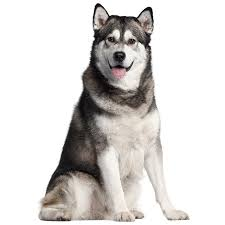
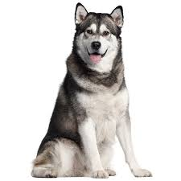
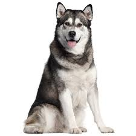

Sobre
Esta pagina serve para as pessoas possam olhar e adotar cachorrinhos bebes ou adultos.
Aqui pode escolher a raça que quere adotar.
 



Esta pagina serve para as pessoas possam olhar e adotar cachorrinhos bebes ou adultos.
Aqui pode escolher a raça que quere adotar.
